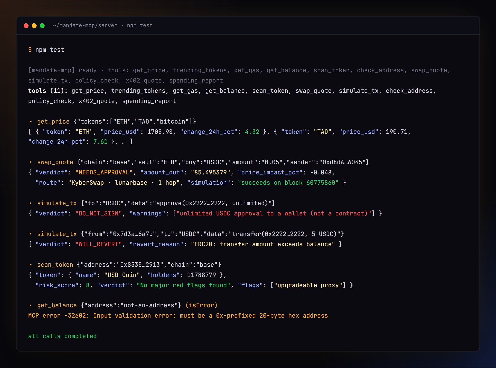
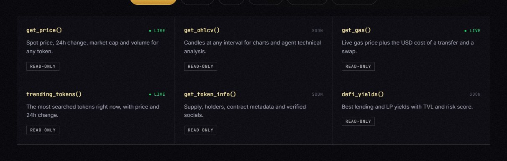
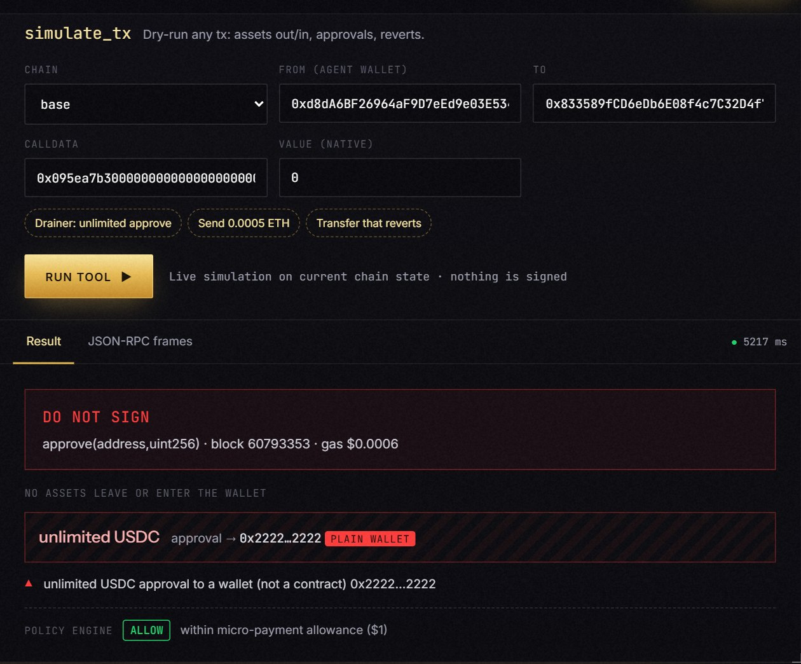
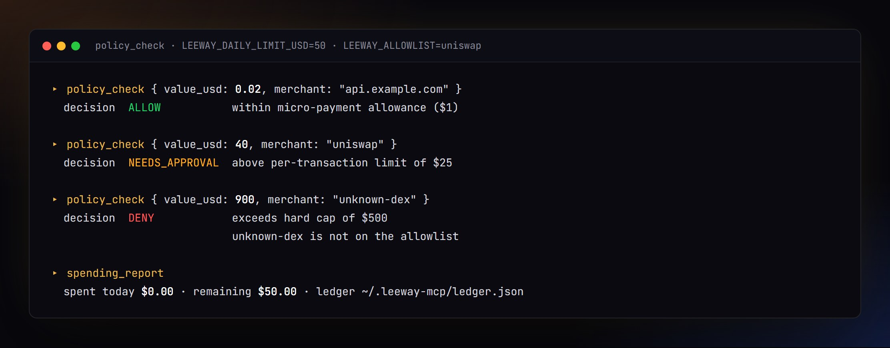
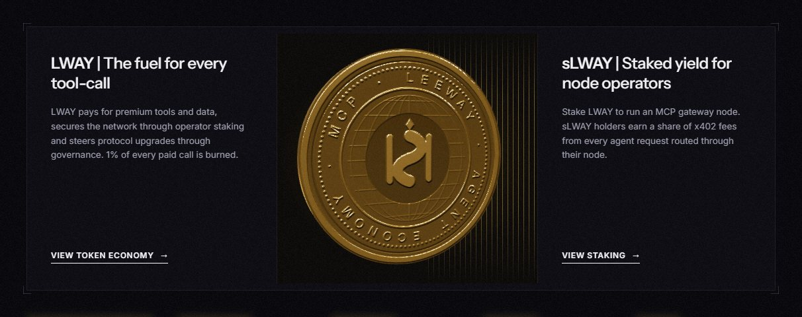

Mandate is an open-source Model Context Protocol server that gives AI agents safe, policy-guarded access to on-chain value. Plug it into Claude, Cursor or any MCP client, and your agent can read markets, check wallets, scan tokens for scams and price x402 payments. Every spend goes through a policy engine that you configure, and nothing the agent says can change it.
DataCoinGecko · PublicNode RPC · GoPlus Security. Free, no API keys
LicenseMIT
Why Mandate exists
AI agents are turning into economic actors. They call paid APIs, buy data, and soon will trade and pay each other. To do that they need money, and today the usual answer is to hand the model a private key or an exchange API key.
That is dangerous. An LLM can be prompt-injected: a malicious web page, token name or email can tell it to "send everything to 0x…". With a raw key, nothing stops it.
Mandate splits capability from authority. The agent gets rich, typed tools to understand the market. Authority to spend stays in a policy engine on your machine, configured by you and enforced in code.
Raw private key in the agent
Any prompt injection can drain funds
No spending limits
No idea whether a token is a scam
No audit trail
Each agent re-implements web3 plumbing
Agent + Mandate MCP
Limits enforced server-side, so prompts can't change them
Daily, per-transaction and hard caps
Risk scan before every buy
Persistent spend ledger
One server works with any MCP client
How it works
Mandate runs as a local process next to your MCP client and talks to it over stdio. The client (Claude Desktop, Cursor, Claude Code and others) lists Mandate's tools to the model. When the model decides to call one, the request flows through Mandate to public data sources, and every spend passes through the policy engine first.
Request flow: agent → MCP client → Mandate → data sources. Spends are always evaluated by the policy engine before any action.
Discover. On start, the client asks Mandate for its tool list. Each tool has a name, description and JSON schema, so the model knows when and how to call it.
Call. The model calls a tool with arguments. Mandate validates them (bad addresses, unknown chains and negative amounts are rejected before anything runs).
Guard. For anything involving money, Mandate evaluates the policy and returns a decision with human-readable reasons.
Answer. Results come back as structured JSON. The model turns them into a plain-language answer for you.
Quick start
Requirements: Node.js 18.17+ and git. No API keys and no wallet needed: every tool available today is read-only.
terminal
# 1. get the code
git clone https://github.com/<you>/mandate-mcp
cd mandate-mcp/server
# 2. install (two dependencies: MCP SDK + zod)
npm install
# 3. verify: spawns the server and calls every tool against live data
npm test
You should see all eleven tools respond, ending with all calls completed:

Real output of npm test: live ETH/TAO/BTC prices, Base gas, a wallet balance, a USDC risk scan, and input validation rejecting a bad address.
Tip To explore tools interactively, run npm run inspect. It opens the official MCP Inspector in your browser.
Client setup
Use the absolute path to server/src/index.js. After Mandate is published to npm, replace "command": "node", "args": ["…/index.js"] with "command": "npx", "args": ["-y", "mandate-mcp-server"].
Any client that supports MCP over stdio works: Windsurf, Zed, Cline, Continue, the OpenAI Agents SDK and custom agents built on the MCP SDK. Point it at node …/server/src/index.js. Environment variables configure the policy (see Configuration).
What a session looks like: the agent scans the token, asks the policy engine, and advises against the purchase. (Illustrative conversation; the token address is shortened.)
Tool reference
Every tool returns JSON as text content. Errors come back with isError: true and a readable message, so the agent can recover. Tools marked read-only never move funds.

The tool catalog on the landing page. ● live tools are documented below; the rest are on the roadmap.
get_price
read-onlymarket
Spot price in USD, 24h change, market cap and 24h volume for one or more tokens. Accepts common symbols (ETH, TAO, SOL…) or CoinGecko ids. Unknown symbols are resolved through CoinGecko search.
Security scan of a token contract. Mandate fetches GoPlus Security data and turns it into a 0–100 risk score (higher means riskier), a verdict and a list of flags. Agents should run it before buying any unfamiliar token.
Reputation check for an address: phishing, drainer contracts, sanctions, mixers, honeypot deployers and other malicious activity. Run it before sending funds anywhere new.
Best-route swap quote across DEXs from the KyberSwap aggregator, with Mandate's checks built in: price impact, gas as a share of the trade, a risk scan of the token being bought (anything outside a curated list of majors goes through the same scoring as scan_token) and the policy decision. Pass sender and Mandate also builds the exact router transaction and runs it through simulate_tx, so the agent sees what it would receive before anything is signed.
Param
Type
Description
chain
enum
Default ethereum
sellrequired
string
Symbol (ETH, USDC, WETH…) or contract address
buyrequired
string
Symbol or contract address
amountrequired
decimal string
Amount of sell in whole units, e.g. "0.25"
slippage_bps
int 1–500
Default 50 (0.5%). Sets min_out
sender
0x…
Wallet that would swap. Enables calldata build + simulation
fund_sender
boolean
What-if mode: simulate as if the sender held enough native token
Verdicts: OK_TO_SWAP (every check passes), REVIEW (warnings, e.g. thin liquidity or a token with elevated risk), NEEDS_APPROVAL (policy wants a human), DO_NOT_SWAP (any check fails: impact above 5%, risky token, policy deny, or the simulation reverts).
Ask: "Quote 0.5 ETH to USDC on Base and tell me if it's safe to do."
simulate_tx
read-onlyrisknew in 0.2
Dry-runs any EVM transaction against live chain state (eth_simulateV1 with transfer tracing) and reports what it would actually do to the sender: assets leaving and entering with USD values, approvals granted, NFTs leaving, the revert reason, gas cost, counterparty reputation and the policy decision. This is the answer to the most common way agents and people lose funds: signing calldata they did not write.
Param
Type
Description
chain
enum
Default ethereum
fromrequired
0x…
Sender (the agent wallet)
torequired
0x…
Destination contract or wallet
data
hex
Calldata. Default "0x" (plain transfer)
value
decimal string
Native value in whole units, e.g. "0.01"
fund_sender
boolean
What-if mode: hypothetical native balance for the simulation
response · unlimited USDC approval to a plain wallet
Medium warnings: unlimited approval to a contract, NFT leaving, unpriced asset
NEEDS_APPROVAL
Policy asks for a human (over a limit, or value that could not be priced)
DO_NOT_SIGN
High warnings: approval to a plain wallet, setApprovalForAll, flagged counterparty, or policy deny
WILL_REVERT
The transaction fails on-chain and would only burn gas; the reason is included
Fail-closed by design: if an outgoing asset cannot be priced, the policy decision is raised to needs_approval instead of being waved through as a $0 micro-payment.

The same check in the landing-page playground, on live Base state.
Ask: "A dApp wants me to sign this. What does it actually do?"
policy_check
read-onlypolicy
Asks the policy engine whether a proposed spend is allowed. If a recipient is given, Mandate checks its reputation automatically, and a flagged recipient is always denied. Agents must call this before moving funds and respect the answer.
Requests a URL. If the server answers HTTP 402 Payment Required using the x402 protocol, Mandate parses the payment options (scheme, network, asset, pay-to address, amount) and returns the policy decision for the cheapest one. It does not pay. Settlement is on the roadmap.
The policy engine is the core of Mandate. It is ~100 lines of plain, auditable code (server/src/policy.js) that turns a proposed spend into one of three decisions:
allowWithin every limit. Typically an x402 micro-payment.
needs_approvalOver a soft limit. A human must confirm.
denyBreaks a hard rule. Nothing can override it.
Evaluation order: hard rules first (any failure is final), then the micro allowance, then soft limits.

Real decisions from the test suite with MANDATE_DAILY_LIMIT_USD=50 and MANDATE_ALLOWLIST=uniswap.
Why it's injection-proof
Limits are read from environment variables when the process starts and enforced in code. The model can only ask for a decision through policy_check; no tool exists that changes the policy at runtime. A prompt-injected agent can request a $10,000 transfer, and the engine returns deny.
The ledger
Approved spends are written to a JSON ledger (~/.mandate-mcp/ledger.json) that resets every UTC day. Restarting the server or the client doesn't reset the budget.
x402 payments
x402 revives the long-unused HTTP 402 Payment Required status code for machine payments. Instead of API keys and monthly plans, a server answers 402 with a price, the client pays a few cents in a stablecoin, and retries the request with a payment proof. This fits AI agents well: no sign-ups, pay per use, settled on-chain.
Steps 1–3 are live today via x402_quote. Steps 4–5 (signing and settlement) arrive with agent wallets.
Security model
Prompt injectionPolicy is enforced outside the model. No tool can modify limits.
Malicious tokensscan_token flags honeypots, mint authority, taxes and unlocked LP before a buy.
Drainer addressesRecipients are reputation-checked inside policy_check. Flagged means deny.
Bad inputJSON-schema validation rejects malformed addresses, unknown chains and negative amounts.
Key exposurev0.1 holds no keys at all. Future agent wallets use scoped session keys, never your main key.
Third-party dataData sources can be wrong or down. Mandate reports errors explicitly and the agent should treat "unknown" as risky.
Disclaimer Mandate reduces risk but cannot remove it. Risk scores come from third-party heuristics. This is not financial advice; you are responsible for funds your agents control.
Equity Rails (phase 4 preview)
Stocks are moving on-chain as tokenized equities: tokens that track a real share and trade 24/7 on Solana, Arbitrum, Base and other chains. Agents will want to manage them the same way they manage crypto. Equity Rails extends Mandate to stocks, using the same mandate engine and adding one equities-specific safety layer.
Parity Guard
A tokenized share should trade close to its underlying stock. When liquidity is thin or the market is closed, it can drift, and an agent buying at a 3% premium simply loses money. Before every buy, Parity Guard compares the on-chain price with the exchange reference price and blocks the trade when the premium is outside your band.
get_equity_quote · parity_check · market_hours · corporate_actions · equity_mandate · execute_equity. Read-only tools ship first; execution comes after the wallet phase and an audit.
Note Tokenized equities are regulated differently from country to country and may be unavailable where you live. Mandate will only route to venues you allowlist. Nothing here is investment advice.
MNDT token (concept)
Status No token exists. This section describes the proposed design for the hosted gateway network. Beware of anyone selling "MNDT" today.

Asset
Role
MNDT
Pays for premium tools and data on the hosted gateway; operator staking; governance. 1% of every paid call is burned.
sMNDT
Staked MNDT. Gateway node operators earn a share of x402 fees routed through their node.
No. All current tools use free public endpoints and are read-only.
Can my agent actually move money today?
Not yet, and that is deliberate. v0.2 provides market intelligence, risk checks, guarded swap quotes, transaction simulation and policy decisions. Execution (agent wallets that sign, x402 settlement) ships next, on top of the same policy engine.
Which AI models work with it?
Any model behind an MCP-capable client: Claude (Desktop, Code), Cursor, Windsurf, Zed, Cline, the OpenAI Agents SDK, or your own agent built on the MCP SDK.
Is my data sent anywhere?
Only the queries a tool needs: token ids to CoinGecko, addresses to the RPC and GoPlus. Mandate has no telemetry.
What happens when a data source is down?
The tool returns isError: true with the reason. Requests time out after 12 seconds, so the agent is never left hanging.
How is this different from giving the agent an exchange API key?
An exchange key lets the model do anything the key allows. Mandate's policy engine sits in between with limits, allowlists and approvals that the model cannot change.
Contributing
Mandate is MIT-licensed and contributions are welcome. A new tool is about 20 lines: register it in server/src/index.js with a zod schema and a handler, put data access in data.js, and add a call to test/smoke.js.
server/src/index.js
server.registerTool('my_tool', {
title: 'My tool',
description: 'What it does and when the agent should use it.',
inputSchema: { address: Address, chain: Chain },
annotations: { readOnlyHint: true },
}, safe(async ({ address, chain }) => {
return { address, chain, result: '…' };
}));
Good first issues: ERC-20 balances, an approval_audit tool, a second swap aggregator as a price cross-check, Solana RPC support, more chains.